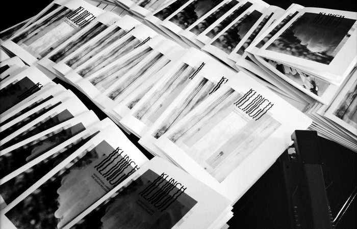
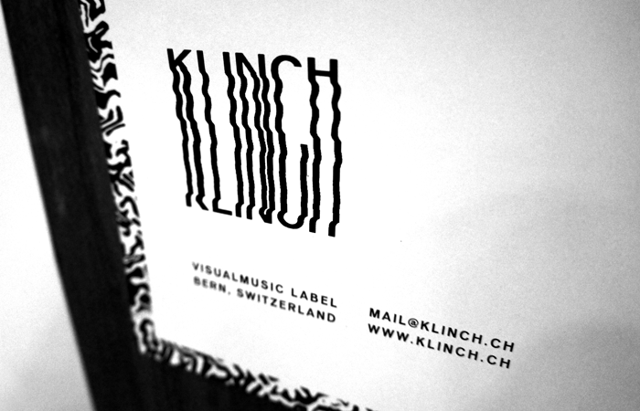

KLINCH is a netlabel for audiovisual releases. We bring together musicians and visual artists for concerted sessions. The products of such collaborations are a song and a poster which belong together. This audiovisual bundle is distributed via the netlabel klinch.ch.
Partner
Webdesign, Fabian Frei
PXP, Olivier Rossel — www.olivierrossel.com
ATLAS studio — www.atlasstudio.ch
DRUCKBUS, Gaspard Weissheimer — www.druckbus.ch
Whatever Gets You Through The Night — www.mood-wood.ch
REBUKANER, Rebekka Schaerer — www.rebukaner.tumblr.com
Das Filter, Kilian Spinnler — www.dasfilter.ch
Bernd Kniel — www.kniel.ch
KLINCH
AudioVisual Label
Bern, Switzerland
mail@klinch.ch
www.klinch.ch
 